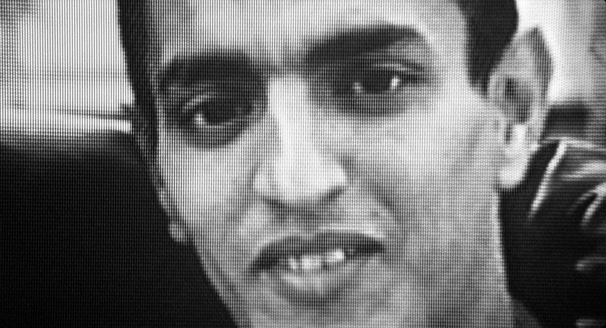

Noite anterior — os distúrbios

Abdel Ahmed Ghili, jovem morador de Chanteloup-les-Vignes, é brutalmente espancado por policiais durante uma operação e hospitalizado em estado grave na UTI. A notícia desencadeia uma onda de protestos violentos nas periferias de Paris. Carros são incendiados, a delegacia local é sitiada — e no caos, um policial perde seu revólver Magnum .44. O filme começa no dia seguinte, mas o peso desta noite paira sobre cada cena.
Manhã — Vinz encontra a arma

Vinz revela a Hubert e Saïd que encontrou o revólver perdido durante os tumultos. Para Vinz, obcecado com Travis Bickle de Taxi Driver, a arma é mais do que um objeto — é um símbolo de poder, de equilíbrio, de vingança possível. Ele faz uma promessa: se Abdel morrer, ele mata um policial. Hubert tenta demovê-lo. Saïd tenta mediar. Somos ambientalizados nessa parte do filme
Tarde — Tentativa de visitar Abdel

Os três tentam visitar Abdel no hospital, mas são barrados pela polícia. A tensão com os agentes escala rapidamente — Saïd e Hubert são detidos, Vinz consegue escapar. Eles são propositalmente presos até a noite para que percam o horário do trem de volta. A humilhação é mais um tijolo no muro de ressentimento que os cerca. A arma permanece com Vinz, mas com um gatilho que agora parece mais leve, que clama pelo aperto.
Noite — Paris, fora dos Banlieues

Deixados e abandonados sem poderem voltar para casa, passam a noite no centro até o próximo trem. Em um mundo que não é o deles, a alienação é visceral — são olhados de lado, abordados,,julgados, excluídos de espaços que existem a poucos quilômetros de onde cresceram. Uma sequência em uma galeria de arte e um encontro violento com dois policiais nos banheiros de um shopping condensam em minutos a frieza do abismo social francês.
"... c'est l'atterrissage"